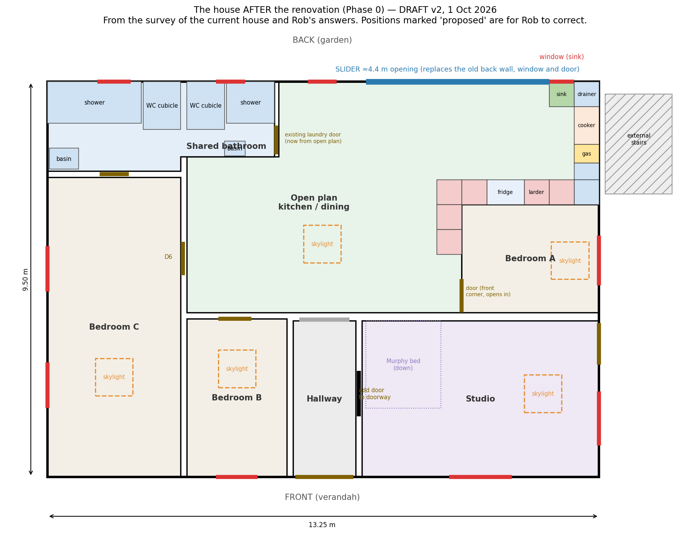
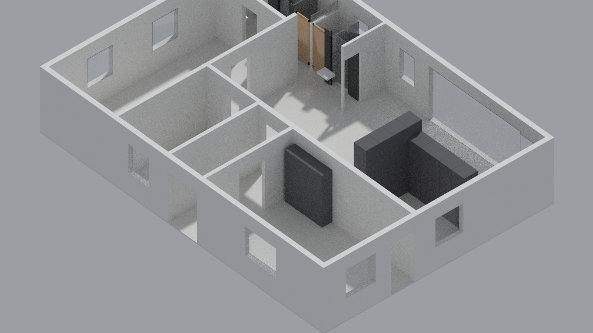
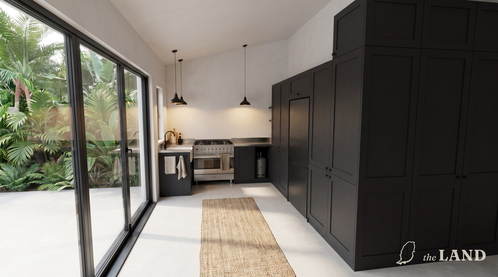
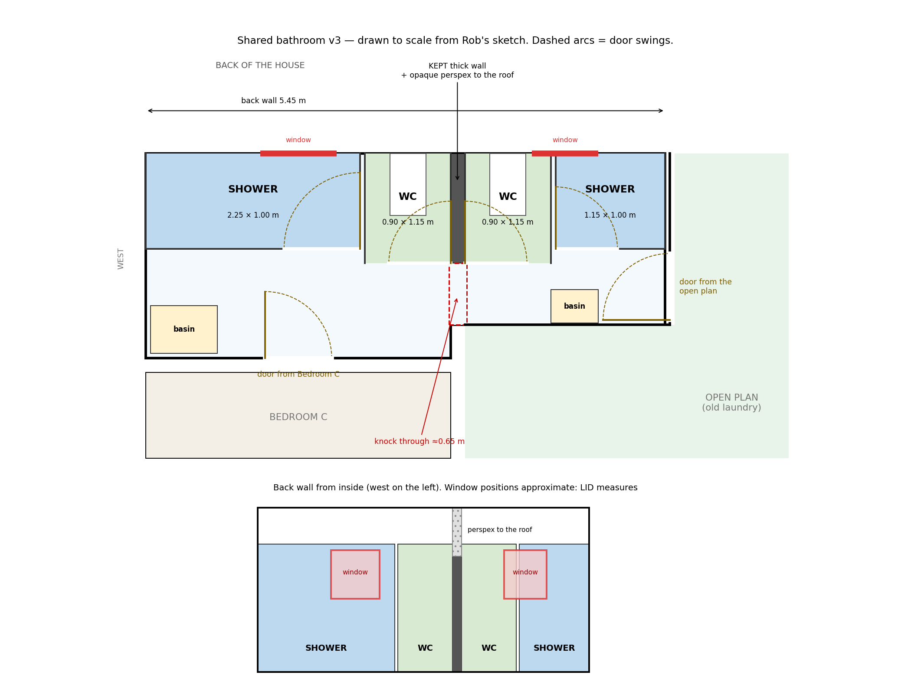
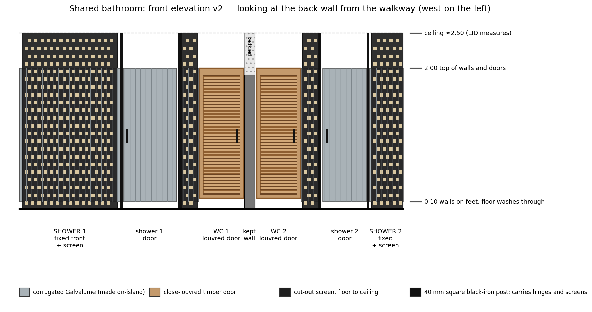
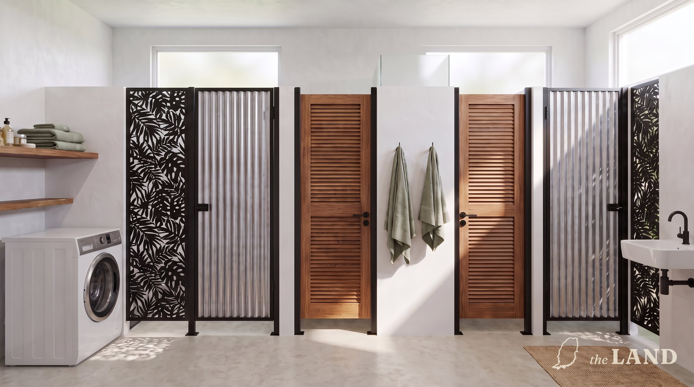
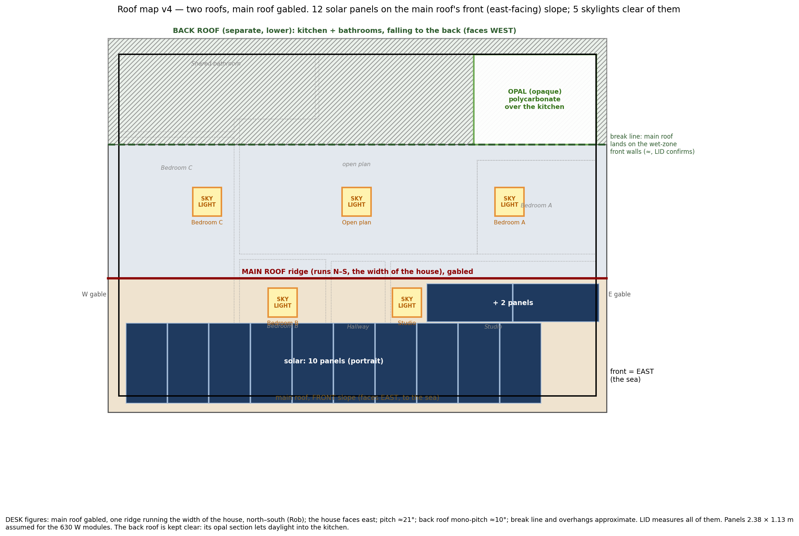
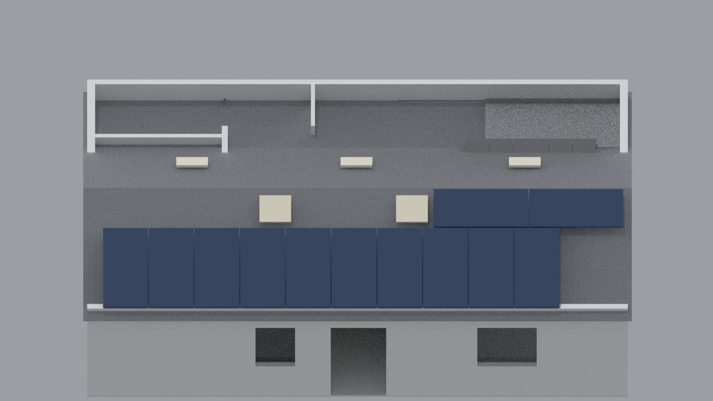

Drawings and pictures of what we want the house to become, with a closer look at the kitchen and the bathroom. The layout comes from a survey of the house as it stands; the builder measures everything on site before anything is made.
The whole house
Three bedrooms (A, B and C), a studio at the front where the living room is now, a shared bathroom across the back, and one open room for cooking and eating that opens to the garden through a wide glass slider.

The floor plan. North is up; the front of the house, on the verandah side, is at the bottom.

The same plan as a 3D model, roof lifted off.
The kitchen
From the house as it stands to the finished kitchen, in five steps.
The back wall opens to the garden through a glass slider, about 4.4 m wide, where the old laundry wall and back door were.
The sink stays under its window, with a drainer beside it.
The six-burner cooker already in the house sits on the stairwell wall, with the gas bottle in a ventilated cupboard beside it.
Cupboards on the bedroom wall, with the fridge and a larder, kept lower (about 2.2 m) because the back roof is low there. They rise to full height as they turn the corner into the open-plan room, and run along that wall as far as Bedroom A's door.
Dark by design: charcoal cupboards, black iron fittings, a stainless worktop.

Artist impression: how the kitchen will feel. The drawings above are the layout to build from.
The bathroom
From the two small bathrooms today to one shared bathroom.
The two old bathrooms become one shared bathroom: along the back wall, a washing machine in the corner, a shower, a WC, the existing thick wall, a WC and a second shower. The two showers are the same size.
The existing wall stays, with an opening knocked through at its front end and opaque perspex above it to the roof.
WC doors are close-louvred timber. Shower walls and doors are corrugated sheet on slim black iron posts, standing just off the floor so it can be washed.
Floor-to-ceiling cut-out screens stand in front of the shower walls: privacy behind, light and pattern in front.
Entry from the open-plan room through the existing door, and from Bedroom C.

The bathroom, to scale.

Looking at the back wall from the walkway.

Artist impression: how the bathroom will feel.
The roof
There are in effect two roofs. The main roof is gabled, with a single ridge running the width of the house. The house faces the sea to the east, so one slope faces east and the other west. A separate, lower roof covers the kitchen and bathroom at the back; part of it, over the kitchen, is opal polycarbonate, which lets daylight through.
Five skylights: one each in Bedrooms A, B and C, the studio and the open-plan room.
Twelve solar panels on the main roof's front slope, which faces east: ten in a row along the eave and two above them, clear of the skylights.

The roof map: skylights, solar panels and the opal section.

The roof in the 3D model.
Measured on site
The drawings are built from a survey. These measurements are taken on site and confirmed before anything is ordered or made:
The kitchen sink window: how far it is from the corner.
The bathroom's back windows, against the new partitions.
The height of the existing bathroom wall, to size the perspex above it.
How wide the opening through that wall can be.
The existing cooker, and the gas bottle.
The slider opening, before the slider is ordered.
The roofs: where the two meet, their pitch, and the overhangs.